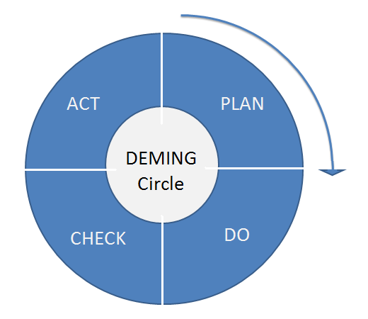

cLean Architecutre
Created by niquola / @niquola
hospital-systems/waveaccess
2013 happydev 2013
Teamlead @ hospital-systems

Behaviour Driven
Важнее то как система себя ведет,
нежели то как она устроена
Use Case
Последовательность взаимодействий с системой направленная на достижение цели
Взаимодействия с системой = вызов методов
iam.tap do |s|
confirmation_key = nil
s.listen :sign_up do |ev|
confirmation_key = ev.confirmation_key
end
s.sign_up!(email, password)
s.confirm!(confirmation_key)
session_key = s.sign_in!(email, password)
s.session_active?(session_key).should be_true
s.sign_out!(session_key)
end
TDD mantra:
Red, Green and Refactor

system.identification_use_case.tap do |s|
confirmation_key = nil
s.listen :sign_up do |ev|
confirmation_key = ev.confirmation_key
end
s.sign_up!(email, password)
s.confirm!(confirmation_key)
session_key = s.sign_in!(email, password)
s.session_active?(session_key).should be_true
s.sign_out!(session_key)
end
Преждевремменное моделирование сложной предметной области
корень множества проблем
niquola
good architecture maximizes
the number of decisions not made
Robert Martin (Uncle Bob)
Выпрямление
- User Story
- Use Case in code
- Prototype
- Implementation
- Refactoring